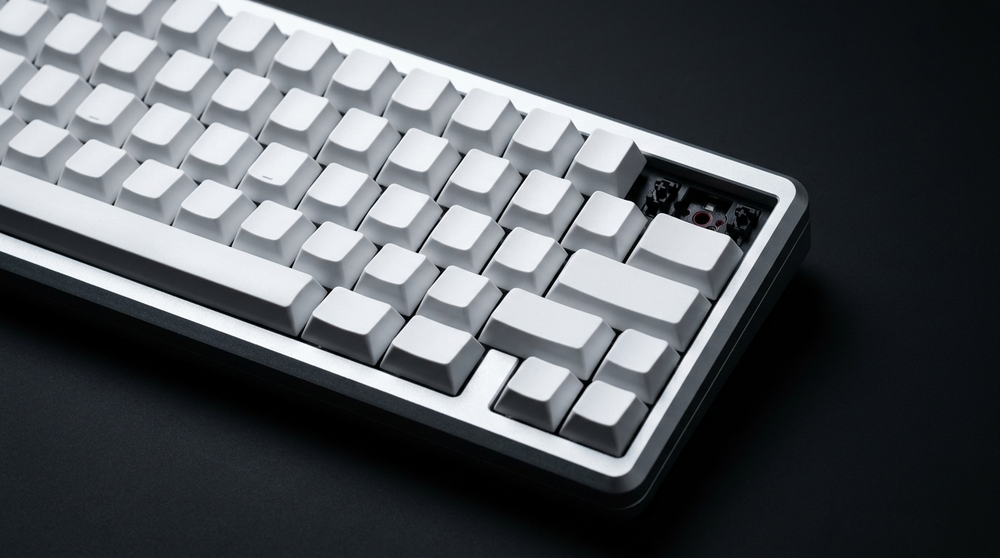
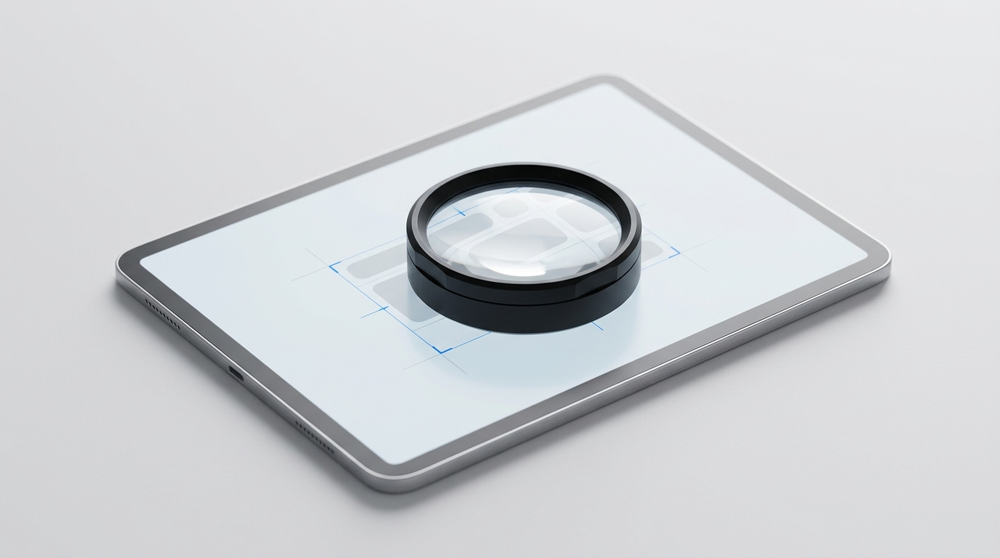
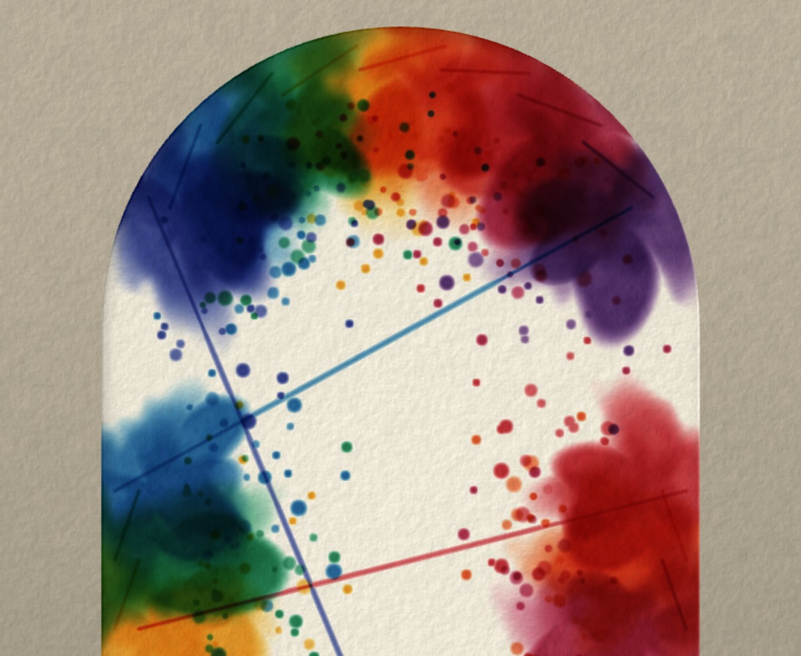

第 7 周 · 吴恩达新课三周系列（第 1 次课）
学会让 AI“按退格键”：
先拆步骤，再看图挑毛病
今天全程说大白话、不背英文黑话、不装任何复杂软件！只练最管用的两招，现场直接玩真案例对比，用 30 分钟紧凑双轮实操把你的第 1 版稳稳改出肉眼变好的第 2 版。
主讲老师宋雨涵
今天节奏50分案例互动 + 30分双轮实操
下课前彩蛋最后 5 分钟翻牌认专业词

今天核心两招：第 1 招先拆 4 步留备份 · 第 2 招发截图让 AI 当冷酷挑刺主编
第 02 页全课只吃透这 1 个真实标杆案例 · 点卡片看演进，点底部胶囊直接打开对应真实网页！
同一件作品养大三周：看《PIGMENT. 墨迹弹珠》如何从灰框长成美术馆版画
4 个阶段全部配有真实可玩网页：点击上方任意一张卡片底部的按钮，即可在新标签页里亲手试玩每一版（顶栏还支持 4 版一键横跳对比）！
第 03 页课堂对比示范 · 点击切换两种真实聊天结局
为什么第 1 版玩得挺开心，一说“帮我改酷一点”就白屏崩了？
真实聊天翻车现场
我：帮我把弹珠小游戏改高级一点，顺便加点水彩特效和关卡吧！
AI：好的！我为您大刀阔斧全部重写了一遍（420 行新代码）
打开浏览器一看：
[惨了] 原来好用的左右挡板按键和发球全失效了
[白屏] 点画布毫无反应，整个网页一片空白
[后悔] 旧文件直接被覆盖，连退回都没法退！
真不是你不会用电脑
打开反面示范翻车网页（亲手体验白屏崩坏）↗
而是踩了三个新手最常犯的坑
- 要求太笼统：“更高级一点”有 100 种改法，AI 只能放飞自我乱重写。
- 没划清红线：没告诉它“哪些好功能绝对不许碰”，它顺手全删了。
- 没先找毛病：连哪里丑、哪里卡都没指出来，就让它推倒重来。
第 04 页吴恩达开场第 1 分钟最经典的生活比喻
发一句话就逼 AI 交满分，就像写期末论文“全程不准按退格键”
想象一下：期末三千字论文，老师把你键盘上的退格键抠掉，不准回头删改一个字，你能写好吗？
以前的老办法 · 抠掉退格键硬憋
一句话扔给 AI，逼它从第一个字一口气写到结尾——不准停、不准查、不准回头改错。
今天的新办法 · 像人一样打草稿重改
- 列小步骤：先想清 4 步，不急着一上来要终稿；
- 先出草稿：做出粗糙但能跑通的第 1 版；
- 睁眼挑刺：发截图找出 3 个最具体的小毛病；
- 按退格改：保住优点，只修挑出来的那几处！
第 05 页课堂小互动 #1 · 先猜分数，再依次点按钮揭晓大反转
实测大反转：只要允许按退格键重改，便宜老 AI 居然反超最贵新 AI！
吴恩达团队公开实测：同一套高难度考题的做对比例
老版本 AI（直接答）
不准按退格键
不准按退格键
48.1%
贵得多的新 AI（直接答）
花钱升级会员，仍不准涂改
花钱升级会员，仍不准涂改
--
老版本 AI + 自查重改
同一个老 AI，只是让它先查错再改
同一个老 AI，只是让它先查错再改
--
迁移到日常学习：写英文稿、改简历、调网页游戏都一样——与其花钱换软件抽卡，不如让免费 AI 先挑刺再改二稿！
数据出处：吴恩达团队 2024 年经典编程考题公开实测（同一老模型凭自查重改反超当时旗舰模型）
第 06 页4 步全配真实嵌入式可交互网页 · 点上方步骤实时切换右侧真机画面！
第 1 招：先别急着喊“做高级一点”，看《PIGMENT.》如何拆成 4 个小步骤
第 1 步 · 定痛点（把“太丑了”翻译成具体病灶）
独立全屏打开「第 1 步：定痛点」样板 ↗
- 新手空话：“弹珠初版太廉价了，帮我改得像苹果设计奖作品！”
- 高手拆法：锁定 3 个具体痛点——① 灰白方框毫无纸艺装裱感；② 撞碎色块毫无水彩晕染；③ 漏球直接弹窗失败太挫败；
- 验收标准：写清这 3 处位置，让 AI 看完一眼知道刀该落在哪儿！
真机嵌入样板 · 第 1 步：灰框 3 处病灶解剖台
点下方按钮逐项点亮红标病灶
第 07 页课堂小互动 #2 · 拖动滑块或点档位，右侧实时变出《PIGMENT.》对应真机产物！
什么时候该管严、什么时候能放手？像带实习生一样分 3 档
拖动滑块感受“放权越大、越容易改飞”
第 2 档 · 帮我挑毛病微调（今天主力）
带实习生类比
我定好方向和底线，请实习生帮我看图挑 3 个毛病再改小细节。
对《PIGMENT.》这样开口说
“保留左右挡板按键和发球不变，看截图只挑 3 个最丑的地方微调。”
稳不稳？
非常稳！只要附带“不许改坏的 3 件事”，又出彩又绝不白屏。
真机嵌入样板 · 第 2 档：保留操控 + 惊艳真水彩
又稳又高级！直接点画布试手感
第 08 页保命对比示范 · 动手改之前必做的 2 件 30 秒小事
防白屏两件护身符：先复制留一份旧备份，再贴上“3 条不许动红线”
护身符 1 · 3 秒复制留备份（真实文件夹示范）
千万别在唯一的原文件上硬改
我桌面上的作品文件夹：
├── 第1版_原件备份.html ← 封存锁死！改坏 3 秒满血复活
├── 第2版_草稿.html ← 第 1 轮看图挑毛病改完的
└── 第2版_正式.html ← 听完同桌吐槽打磨好的
护身符 2 · 《PIGMENT.》3 条不许动红线
- 保操控：左右挡板按键（A / D 与点击画布左右侧）与空格发球必须丝滑好用；
- 保结构：继续零依赖单文件，浏览器双击直接玩，不许引入外部联网素材；
- 保范围：只改挑出的 3 个画面与质感小点，绝对不许全文重写！
第 09 页视觉大片 + 真话示范 · 告别只会拍马屁的 AI
第 2 招：别让 AI 顺着夸你！逼它先当“冷酷主编”挑 3 个具体刺再改
平时嘴甜的 AI（越夸你越没用）
“您的弹珠游戏创意非常棒！物理反弹逻辑清晰，界面干净简洁，整体体验非常不错，建议可以继续保持并稍微提升一点精致度！”
发截图换上“冷酷挑刺主编”帽子后的真实回答
- 毛病 1（台面）：死灰直边框配硬直角，毫无棉纸与剪纸凹槽质感；
- 毛病 2（反馈）：撞碎色块直接凭空消失，毫无水彩晕染和轨迹线；
- 毛病 3（体验）：漏球就弹刺眼失败框，底部也缺 3 秒上手提示！

关键动作：直接截一张真实屏幕画面发给 AI，让它拿放大镜睁眼挑硬伤！
第 10 页课堂高能互动 #3 · 全场只看这一个真案例：先玩干瘪灰框初稿，再直接真机试玩《PIGMENT.》！
现场上手打 10 秒：对比“干瘪灰框弹珠初稿”vs“《PIGMENT.》水彩美术馆版”
真机试玩 · 第 1 版灰框弹珠（默认粗糙原型）
玩家感受：48分 · 点击画布左右击拍
亲手打两杆你就懂了
独立全屏打开《PIGMENT.》美术馆 ↗
电脑一行报错没有，但丑到 3 秒想关
点击左边画布左右两侧挥拍弹球——死灰铁皮背景、粗糙红蓝方砖、撞碎只干巴巴消失，连一点纸感和水彩晕染都没有！点第 2、3 按钮，亲眼看发截图挑刺后诞生的真水彩流体美术馆版《PIGMENT.》！
体验完先课间休息 10 分钟！顺手解压微信群里的 W7 学生包（里面已附上完整《PIGMENT.》样板），回来一鼓作气用 30 分钟双轮实操打磨出第 2 版！
第 11 页30 分钟双轮实操 · 第 1 轮（14′）· 下方附《PIGMENT.》高分示范 vs 反例
实操第 1 轮（14 分钟）：留备份、拆 4 步，发截图改出新版草稿
第 1 轮实操倒计时 · 节奏紧凑，卡壳随时举手
14:00
这 14 分钟紧凑走完 3 步
- 2 分钟：复制留旧备份（上周文件丢了就用任务单里的救急话术快速重建）；
- 4 分钟：复制1 号话术拆出 4 步 + 写死 3 条不许动清单；
- 8 分钟：截张图贴给 AI 跑2 号话术挑 3 个刺出新版草稿，打开确认没白屏！
《PIGMENT.》参考样板间
《PIGMENT.》高分示范：“保留原有左右挡板按键和发球规则绝对不许动；只把背景换成暖白冷压棉纸加剪纸卡纸外框投影，撞碎彩砖时沿反弹方向爆出真水彩晕染并留下极细轨迹线。”
快手加餐提前跑通？顺手给 AI 再提 1 处细节（如金/银/铜零挫败奖牌球或一键导出画作），练练只改 1 处不崩盘！
卡壳救急上周文件丢了或改白屏？打开任务单话术窗点「救急起手」，3 分钟原地生成一个弹珠初版！
第 12 页30 分钟双轮实操 · 同桌互玩（6′）· 1 分钟快测 + 每人 2.5 分钟抓硬伤
同桌互玩 6 分钟：不说客套废话，送给对方 1 条“一针见血真吐槽”
同桌互玩倒计时（1′ 眼力小测 + 每人试玩 2.5′，随后直奔第 2 轮）
06:00
小热身：点选下面哪条吐槽能真正帮同桌改好《PIGMENT.》？
即时点评与同桌互玩任务
点击左侧 A / B / C 任意一条测试一下！
互玩时帮对方盯住 3 件事：① 3 秒内懂不懂怎么操作；② 哪一瞬间最卡手或遮挡画面；③ 比第 1 版真变好了吗？
第 13 页30 分钟双轮实操 · 第 2 轮（10′）· 只改同桌指出的 1 点
实操第 2 轮（10 分钟）：把同桌的真吐槽喂给 AI，定稿正式第 2 版
第 2 轮定点精修倒计时（6′ 续修验货 + 2′ 对比图 + 2′ 任务单）
10:00
这 10 分钟紧凑做完 3 件小事
- 1. 定点续修（6 分钟）：把同桌真实吐槽填进续修话术，严令 AI 只改这 1 点并打开验无白屏；
- 2. 截前后对比图（2 分钟）：把第 1 版和正式第 2 版并排各截一张图留证据；
- 3. 补全任务单（2 分钟）：记下两轮分别变好了哪里，勾上底部确认框。
《PIGMENT.》真实同桌吐槽 → 定点精修示范
同桌吐槽：“水彩质感超惊艳！但开局提示条压住底部金球，而且波洛克轨迹线略粗像马克笔！”
→ 发给 AI（续修话术）：保留全部水彩扩散与挡板逻辑，只改 2 处细节：
1. 把操作提示条挪到画框最底边 28 像素处，首次点击立刻淡出；
2. 把钢珠轨迹线从 1.8 像素收细到 1.1 像素针管笔质感
→ 结果：15 秒零报错定稿正式第 2 版，同桌试玩直接点赞！
快手加餐改完还有空？把第 1 版和第 2 版并排截成长图，准备待会儿上大屏 60 秒开秀！
卡壳救急续修改乱了？立刻用备份覆盖回来，把同桌吐槽拆成更短的一句话单独让 AI 改！
第 14 页邀请 3–4 位同学投屏晒一晒 · 照下面 3 句模板讲就超精彩
大屏晒变化：看看今天谁的第 1 版 → 第 2 版进化最让人惊喜！
上台 60 秒发言“万能 3 句示范”（以《PIGMENT.》为例）
- 第 1 句（晒图）：“左边是我上周死灰框的第 1 版弹珠，右边是今天刚改好的水彩画框第 2 版！”
- 第 2 句（最神挑刺）：“发截图后 AI 一眼揪出无纸感无晕染，我同桌还补了一条‘提示条挡住金球’的真吐槽。”
- 第 3 句（保命心得）：“幸好留了备份和 3 条红线，两轮改完一次白屏都没出！”

不论你做的是游戏、短片还是策划：只要前后变化肉眼可见、说出哪条挑刺最准，全场直接鼓掌！
第 15 页 · 最后 5 分钟名词小词典先会做、再认词 · 点击任意卡片翻开揭晓！
揭秘时刻：你今天亲手做过的 4 件事，在 AI 圈原来叫这些“洋气名词”
是不是瞬间祛魅了？以后听新闻或大厂面试聊这些英文词，你心里笑一声：“这不就是我大一/大二在课上亲手做过的嘛！”
第 16 页周日晚上 9 点前提交 · 下周见
第 1 次课轻松收工：导出两块小报告，下周我们给 AI 装上手脚！
交卷前 3 项打卡自查 · W7_学号_反思升级第2版.zip
下周（第 2 次课）更过瘾！
给 AI 装手脚 + 5 行错题体检表
为什么 AI 写诗绝美却连 100 块复利都算错、还会张口编假历史？下周现场抓包 AI 翻车，再用一张《错题体检表》做外科微创手术！
打包自查进度：0 / 3 项 · 跟着老师一起逐项点击上面清单核对，防止漏文件！